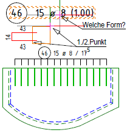
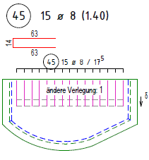
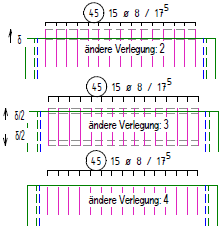

")
")
Ändern einer Auszugsform und aller verknüpften Verlegungen durch Verschieben von Formpunkten. Die Formpunkte können durch Angabe eines rechteckigen oder polygonalen Bereichs gewählt werden. An die Formpunkte angrenzende Teillängen werden angepasst, die resultierende Gesamtlänge wird auf maximal mögliche Gesamtlänge geprüft.
Gleichzeitiges Dehnen der Geometrie und der Bewehrung ist mit der Funktion "Bewehrung dehnen" [DehBew] möglich.
[Formst | BewDeh → DehBew].
|
Hinweis: |
|
Projizierte Teillängen werden nur geändert, wenn die gesamte Biegeform in einem Standard-Projektionswinkel (0º, 90º, 180º, 270º) oder parallel bzw. orthogonal zu einer Teillänge der Auszugsform projiziert wurde. Bei Bögen gilt als Teillängenwinkel der Winkel der Sehne. |

1.Form und Bereich auswählen
§Klicken Sie den Auszugstext einer mit dem Auszug verknüpften Position an. [Welche Form?].
§Definieren Sie per Mausklick den Bereich, der gedehnt werden soll. [1.Punkt]; [2.Punkt].
Das Umschalten zwischen Rechte und Polygo ist möglich.
Optionen im Funktionsbereich
Auswahl durch Klicken und Ziehen eines rechteckigen Bereiches. |
|
Auswahl durch schrittweises Anklicken von Polygonpunkten. Bestätigung mit Rechtsklick. |
2.Dehnmaße angeben
§Geben Sie unter XV und YV an, wie die im gewählten Bereich liegenden Formpunkte verschoben werden sollen.
XV |
Verschiebung der im gewählten Bereich liegenden Punkte in X-Richtung. |
XY |
Verschiebung der im gewählten Bereich liegenden Punkte in Y-Richtung. |
–Angaben in Eingabeeinheiten; negative Werte sind möglich. Bestätigen Sie jeweils mit der Eingabetaste.
–Am Auszug und bei den Verlegungen als Form wird die Änderung sofort richtig dargestellt.
–Ist die Form auch als Staffel verlegt, werden die einzelnen Verlegungen nacheinander abgearbeitet. [Enter-Taste = ändere Verlegung].
Optionen unter der Abfrage |
Mit den folgenden Optionen (1 bis 4) können Sie die Darstellung der Längenänderung anpassen. [Enter-Taste = ändere Verlegung].
Nutzen Sie die rechte Maustaste oder die Eingabetaste, um zwischen den Darstellungsoptionen zu wechseln, und die Vorschau an der Verlegung anzeigen zu lassen. Klicken Sie alternativ eine der Schaltflächen an. Die Verlegung wird auf der Zeichnung mit der Farbe für Markieren hervorgehoben; [Option | SysDat | Farbeinstellungen | Konstruktionsprogramm].
Anmerkung: Bei den Optionen 1 und 2 kann die Verlegung je nach Verlegeparameter jeweils in die eine oder in die andere Richtung verschoben werden. Die Markierungskreuze  an der Verlegung zeigen an, in welche Richtung die Längenänderung vorgenommen wird.
an der Verlegung zeigen an, in welche Richtung die Längenänderung vorgenommen wird.
Option 1: Verlegung am Ende dehnen |
|
Option 2: Verlegung am Anfang dehnen |
|
Option 3: Verlegung um die halbe Längenänderung zu beiden Seiten gleich verschieben. |
|
Option 4: Verlegung nicht ändern. Es wird die ursprüngliche Länge gezeichnet. |
|
|
|
Bei mehreren Verlegungen, die mit derselben Biegeform verlegt worden sind, wird Ihnen angezeigt, welche Verlegung von wie vielen Verlegungen (z. B. 1 von 2) gerade geändert wird. Die entsprechende Verlegung wird in der Zeichnung markiert. Klicken Sie auf diese Schaltfläche, um die aktuelle Verlegung zu ändern und die nächste anzupassen. Geben Sie alternativ "0" in die Eingabe ein und bestätigen Sie mit der Eingabetaste. Die zuletzt gewählte Darstellungsoption wird für die nächste Verlegung übernommen. |
Nach dem Ändern der letzten Verlegung klicken Sie auf diese Schaltfläche, um alle Änderungen zu bestätigen. Geben Sie alternativ "0" in die Eingabe ein und bestätigen Sie mit der Eingabetaste. |
|
Auto-Zoom an: Auto-Zoom aus: |
Beispiel:
 |
 |
 |
Der Steckbügel soll um 20 cm verlängert werden. |
Die erste Verlegung ist hier richtig und wird bestätigt. |
Die weiteren Vorschläge können mit Rechtsklick gewechselt werden. |
Siehe auch: